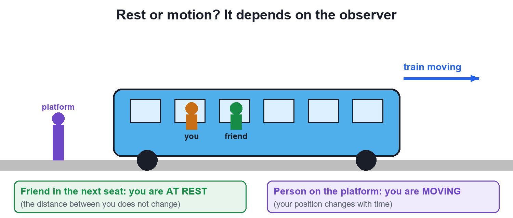

Rest and Motion: Motion is Relative
Video not playing? Watch on Instagram · YouTube
Are you moving right now? It depends on who is watching. Rest and motion are always measured from a reference point.
Download the short notesPDF, 88 KB · solved examples, practice set and answer key Up next in this chapter
 Distance vs DisplacementDistance counts the whole path you walked; displacement only looks at the straight line from start to end, with its direction.Physics · simulation
Distance vs DisplacementDistance counts the whole path you walked; displacement only looks at the straight line from start to end, with its direction.Physics · simulation
Key points
- An object is at rest if its position does not change with time, relative to a reference point.
- It is in motion if its position changes with time, relative to that point.
- The same object can be at rest for one observer and moving for another.
- Nothing is in absolute rest: even the ground moves with the Earth around the Sun.
Relative to whom?
Sitting in a moving train, are you at rest or moving? Both answers are right, because rest and motion are relative: they mean nothing until you choose a reference point (an observer or origin) to measure position from.

Key definitions
| Term | Meaning |
|---|---|
| Reference point | A fixed point (or observer) from which position is measured; also called the origin. |
| Rest | Position does not change with time, relative to the reference point. |
| Motion | Position changes with time, relative to the reference point. |
Position changes with time → motion. Position does not change → rest.
More examples
- Passengers in a bus are at rest relative to each other but moving relative to the road.
- A tree is at rest relative to the ground but moving relative to the Sun.
- A geostationary satellite stays over one spot of Earth, yet moves fast relative to the Sun.
Common mistake: saying something is simply "at rest" or "moving". Always name the reference point. Slow motion is still motion if the position changes.
Try it yourself
Goal: See that the same passenger is at rest for one observer and in motion for another.
- Choose who is watching: the person on the platform or your friend in the train.
- Press Play (or drag the time slider).
- Watch your position measured from that observer: does it change?
- Switch observers and compare.
Quick quiz
4 questions. Choose an answer for each, then submit to see your score and the explanations.